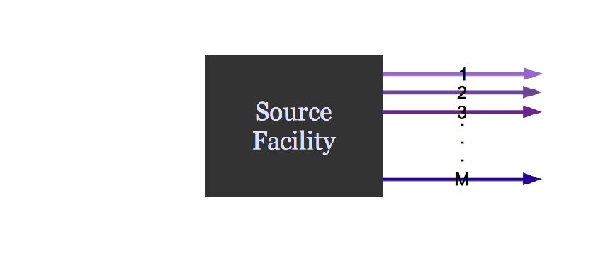
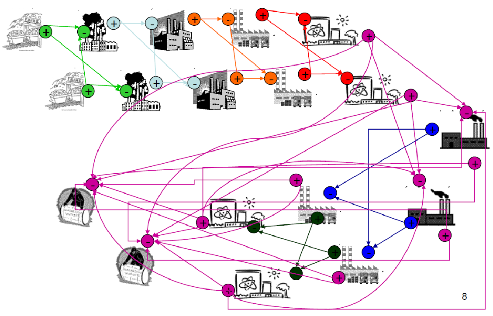

Do It For Science
PyCon 2017
Portland, OR
May 20, 2017
Kathryn (Katy) Huff


1943: Argonne
Lemont, IL
EBR I
August 24, 1951
BORAX III, 1955
Fermi I, 1966-1966
An academic reactor or reactor plant almost always has the following basic characteristics: (1) It is simple. (2) It is small. (3) It is cheap. (4) It is light. (5) It can be built very quickly. (6) It is very flexible in purpose. (7) Very little development will be required. It will use off-the-shelf components. (8) The reactor is in the study phase. It is not being built now.
On the other hand a practical reactor can be distinguished by the following characteristics: (1) It is being built now. (2) It is behind schedule. (3) It requires an immense amount of development on apparently trivial items. (4) It is very expensive. (5) It takes a long time to build because of its engineering development problems. (6) It is large. (7) It is heavy. (8) It is complicated.
USS Nautilus
Water
US EPA WNTR: Water Network Tool for Resilience


Climate

Energy
A Nuclear Fuel Cycle Simulation Framework
The Nuclear Fuel Cycle
Hundreds of discrete facilities mine, mill, convert, fabricate, transmute, recycle, and store nuclear material.

Agent Based Systems Analysis
An agent-based simulation is made up of actors and communications between those actors.
Agent Based Systems Analysis
A facility might create material.
{kind=link}
Agent Based Systems Analysis
It might request material.

Agent Based Systems Analysis
It might do both.

Agent Based Systems Analysis
Even simple fuel cycles have many independent agents.
{kind=link}
Transition Analysis

Power generated by reactor type.
Material Tracking

Fuel movement by type.
PyNE


Health

Pint
In [1]: import pint
ureg = pint.UnitRegistry()
3*ureg.meter + 4 * ureg.cm
Out [1]: <Quantity(3.04, 'meter')>
github.com/hgrecco/pint has 97 open issues
Four Simple Steps
- Be curious
- Pick a project
- Contribute to science
- Save the world
THE END
katyhuff.github.io/2017-05-20-pycon
Do It For Science: PyCon 2017 by Kathryn Huff is licensed under a Creative Commons Attribution 4.0 International License.
Based on a work at http://katyhuff.github.io/2017-05-20-pycon.